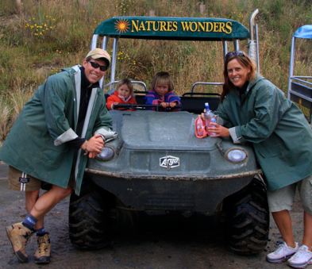

dunedin - Otago Peninsula

Sæler, guløjede pingviner og billige gummistøvler
onsdag den 23. januar 2008

Vi sover alle til kl. 8.00, vi har dog Stella imellem os. Hun vågner desværre hver nat kl. 2.00 og græder, det er som om hun lige skal forvisses om, at alle stadig er hos hende i de ukendte omgivelser. Det har været en lidt kold nat, hvor vi har haft gang i varmeapparaterne, men solen skinner heldigvis, det blæser og termometeret har sneget sig op på 17 grader.
Vi pakker sammen og kører mod spidsen af Otago halvøen, hvor vi skal studere dyrelivet. turen er flot, vejen kører 1 meter fra vandet, så man skal ikke dreje meget forkert i den store camper.
Vi skal på en lille køretur hos firmaet “Natures Wonders”. Man bliver iført store oliejakker, bliver placeret 6 mand i en bil, der er en blanding af en golfbil og en tank, og så er det ellers afsted udover bakkerne.
Vi stopper indimellem for at få lidt generel viden om området af vores chauffør Glen. Vi kan blandt andet se en pynt, som er det første sted på jorden, hvor solen står op. Vi kører videre mod vandet, og en stor pelssæl koloni bestående af mødre og børn. Ungerne hygger sig i et lille naturskabt badebassin, mens mødrene slapper lidt af. Vandet er fyldt med kæmpe tangplanter - Bull Kelp, tangen kan vokse 60 centimeter om dagen og er den næsthurtigst voksende plante på jorden.
Vi skal også se pingviner, så vi stopper ved en slags fort, hvor vi kan betragte en meget øde strand uden at pingvinerne kan se os. Vi ser en enkelt guløjet pingvin på vej med mad til ungerne. Den er meget langt væk, og kan kun ses med kikkert. Den guløjede pingvin er en truet dyreart. Den lever ikke i kolonier, og den vil ikke lægge æg, hvis der er andre pingviner eller mennesker i nærheden. Den voksende bestand af søløver er også en trussel, da de spiser pingvinerne. Vi kommer helt tæt på en blå pingvin, verdens mindste, og pigerne formår at være helt stille mens vi betragter den.
Efter en bumletur tilbage, rigger vi an til frokost. Og Hr. og Fru Danmark er lykkelige, da de kan sætte tænderne i en marineret skandinavisk Abba sild med udsigt til Stillehavet.
På vej til Dunedin besøger vi det eneste slot på den sydlige halvkugle - ifølge kiwierne, meeen der er nu ikke meget slot over villaen, til gengæld er udsigten flot.
Tilbage i byen vover vi at forsøge med en parkering af camperen i centrum. Tim skal klippes, men det lykkes ikke at finde en ledig frisør, og Viola og jeg får ikke lov, selvom det jo er super billigt hos Salon Viola et Camille. Vi finder derimod byens stormagasin : Farmers. Det minder om hedengangne Dallevalle, hvor jeg ofte var på tur med min mormor. Man kan få meget spændende hudfarvet lingeri, der holder på formerne. Vi ender i skoafdelingen, da pigerne skal have gummistøvler. De har 3 par i alt, det er sjovt nok ikke noget ,man er lagerførende i, her på New Zealand. Heldigvis passer størrelsen på 2 af parrene nogenlunde, så Viola får et par seje Spiderman støvler, og Stella et par polkaprikkede lyserøde. Det viser sig, at der er udsalg, så vi drager afsted med 2 par støvler for 40 kr. - det fåes da ikke billigere!
Hjemme på pladsen er der fri leg inden middagen, der indtages i strid blæst. Så er det badetid og sengetid. I morgen kører vi sydpå mod Catlin kysten, hvor vi forhåbentlig skal se flere dyr.
/Camilla
Her er vi i vores seje terrængående golfbil. Vi måtte desværre ikke selv køre, men chaufføren lavede da en 360´er inden afslutningen på turen, til stor glæde for både store og små legebørn.